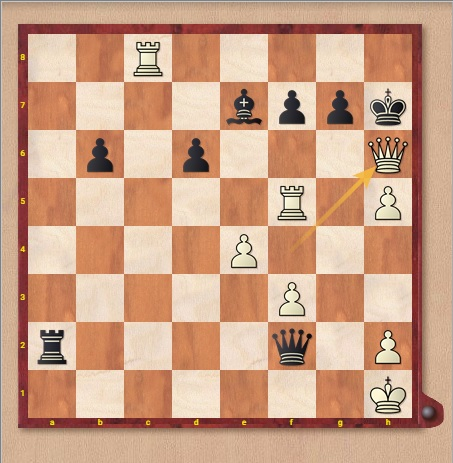

<link rel="import" href="../../bower_components/polymer/polymer.html">

<link rel="import" href="../../bower_components/paper-button/paper-button.html">
<link rel="import" href="../../bower_components/paper-header-panel/paper-header-panel.html">
<link rel="import" href="../../bower_components/paper-material/paper-material.html">
<link rel="import" href="../../bower_components/paper-dialog/paper-dialog.html">
<link rel="import" href="../../bower_components/neon-animation/animations/scale-up-animation.html">
<link rel="import" href="../../bower_components/neon-animation/animations/fade-out-animation.html">


<dom-module id="chess-app">
  <template>
    <style>
      :host {
        display: block;
      }
    </style>
    
   
    <!-- client ID: 145682336450-h7dhjmddoqjclvs3jpes83pv2mkr40ji.apps.googleusercontent.com 
        Clientschluessel: AMblVYVf_uV4yderqoVlxzH4 -->
    
    <div class="headline" >
    	<center>
    	<paper-material elevation="3">
	    	<h1 color="#FFBF00">Web Chess</h1>
	    </paper-material>
	    </center>
	    </div>
    		<div class="description">
    		<center>
    		<paper-material elevation="5">
		    	<p>Sie wagen den Kampf gegen die Maschine?<br>
		    	Beweisen Sie sich hier, lassen Sie aber niemanden zusehen. Ansonsten wird es Peinlich für Sie!<br>
		    	    Der Schachcomputer wartet  auf würdige Gegner - bisher vergebens. <br>
		    	    Loggen Sie sich ein und schaffen Sie eine gloreiche Niederlage!
		    	</p>
    	</paper-material>
    	</center>
    </div>
    
    
  </template>

  <script>
    Polymer({

      is: 'chess-app',

      properties: {
        prop1: {
          type: String,
          value: 'chess-app',
        },
      },
      
    });
    
    
   
  </script>
</dom-module>

<dom-module id="home-page">
  <template>
    <style>
      :host {
        display: block;
      }
    </style>


<center>
<div class="description">
    <p>
        Der unten angezeigne Schachzug wurde Schachzug des Jahres 2016! <br>
        Gespielt von Carlsen Magnus (Norwegen) gegen Karjakin Sergey (Ukraine) bei der Schachweltmeisterschaft 2016.<br>
        Nach 12 gespielten Spielen stand es zwischen den Beiden 6:6. Im Anschließenden Tie-Break gewann Titelverteidiger Carlsen Magnus mit dem unten abgebildeten Zug.<br>
        <a href="https://de.chessbase.com/post/best-of-2016-der-zug-des-jahres-2016">(Quelle)</a>
    </p>
    </div>
    
    
</center>


  </template>

  <script>
    Polymer({
      is: 'home-page',
      properties: {
        prop1: {
          type: String,
          value: 'home-page',
        },
      },
    });
  </script>

</dom-module>
